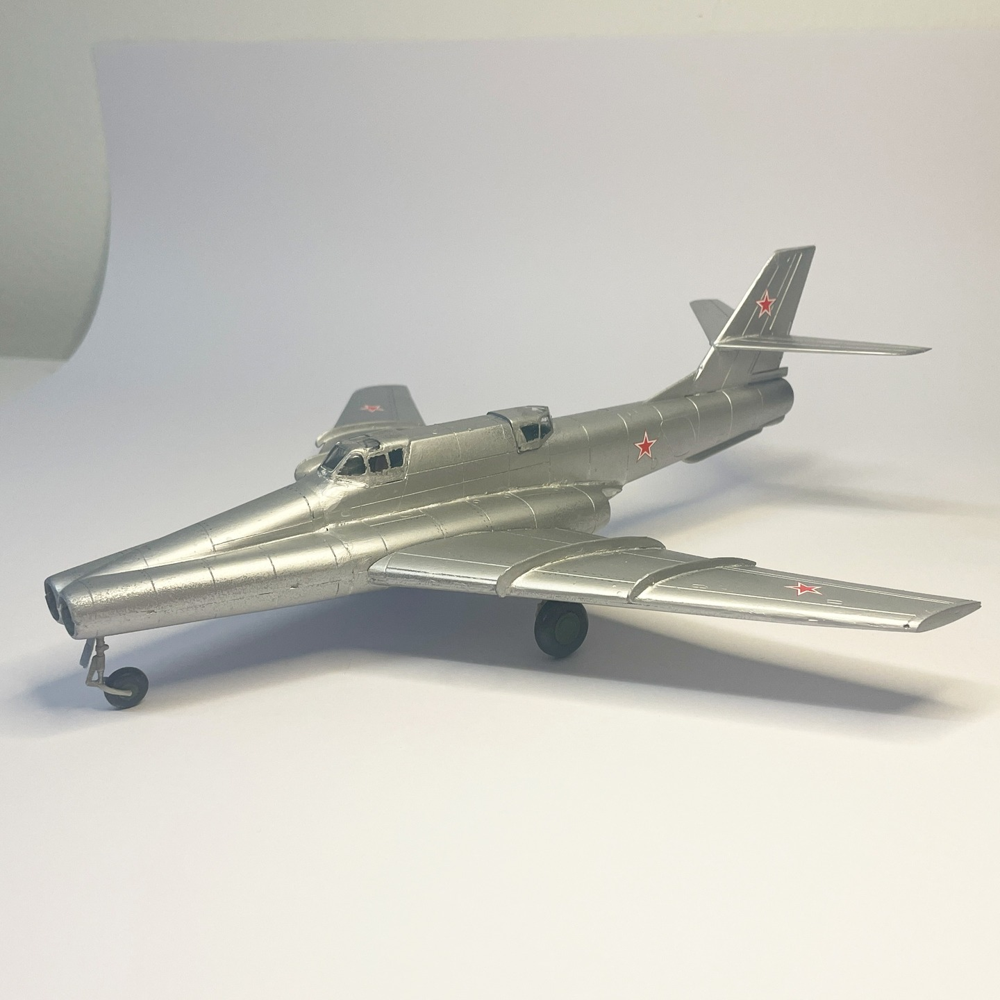
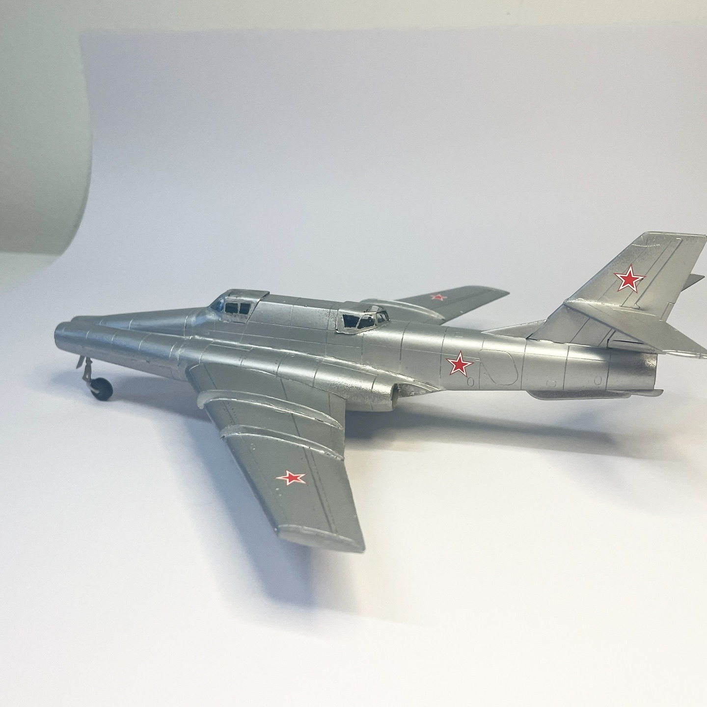

Aerei · scale model archive
Ilyushin Il40p
Ilyushin Il40p — Kit: Amodel, Scale: 1/72. Talking about odd looking planes? The double-barrel shotgun appearance is noteworthy, more info under:…

Photo gallery

English description
Talking about odd looking planes? The double-barrel shotgun appearance is noteworthy, more info under: https://www.youtube.com/watch?v=DtIFHBHrgiU&ab_channel=IHYLS #il40
Descrizione italiana
Parliamo di aerei dall’aspetto strano? L’apparenza da doppietta è notevole. Maggiori informazioni qui: https://www.youtube.com/watch?v=DtIFHBHrgiU&ab_channel=IHYLS #il40